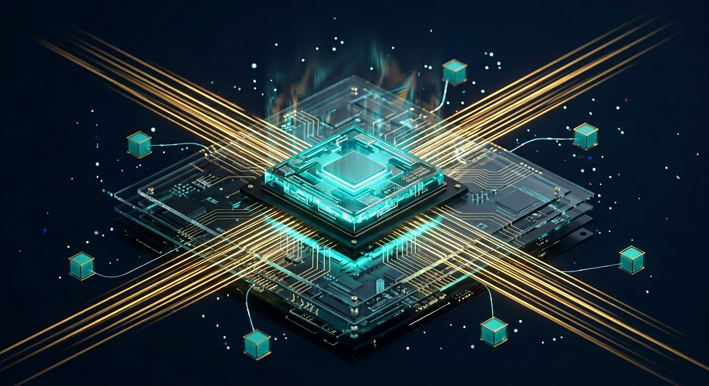

Systems, hardware & research methods
Ideas that don’t fit in silicon or in a paper’s experiment section don’t count.

Figure 29.1 — Every idea eventually meets memory bandwidth, latency and joules.
Hardware & efficiency
- CPU vs GPU vs TPU vs NPU: throughput of matmuls.
- Memory bandwidth often the bottleneck (especially inference).
- Quantisation, pruning, distillation, KV-cache, FlashAttention, MoE (activate a subset of experts).
- Data/model/pipeline parallelism for training giants.
How to do research
- Read the related work like a prosecutor: what is actually claimed?
- Reproduce the baseline before inventing a layer.
- Ablate one change at a time.
- Report seeds, compute, and failures.
- Write the limitation section as if a reviewer you respect will read it.
Venues: NeurIPS, ICML, ICLR, CVPR, ACL, TMLR, journals. Preprints on arXiv. Reproducibility crises are real — trust plots you can rerun.
The efficiency toolkit
| Technique | What changes | Headline effect |
|---|---|---|
| Quantisation (INT8/INT4, GPTQ/AWQ) | Weight/activation bit width | 2–4× less memory; faster, cheaper decode |
| Pruning / sparsity | Remove weights, heads, layers | Smaller models; speedup needs hardware support |
| Distillation | Train a small model on the large model's outputs | Serve cheaply while keeping most quality |
| KV-cache + paged/continuous batching | Serving engine | Large throughput gains for autoregressive LMs |
| FlashAttention / IO-aware kernels | Fused, tiled GPU kernels | Avoids HBM traffic of materialising attention |
| Mixture-of-Experts | Route tokens to sparse experts | More parameters at near-dense FLOP cost |
| Parallelism (data/tensor/pipeline) | Shard across GPUs | Trains models larger than one device |
Reading a systems paper critically
Roofline it: arithmetic intensity is FLOPs per byte moved — is the kernel compute-bound or memory-bandwidth-bound? Report MFU (model FLOPs utilisation), batch size, sequence length and hardware; otherwise speedups do not transfer. For compression methods, demand the quality cost — perplexity delta, accuracy delta, MMLU/downstream regression — because a 4-bit model that quietly loses reasoning is not a saving.
Short notes
Systems convert algorithms into tokens/sec and joules. Research converts questions into controlled evidence. Both are part of “PhD-level AI,” not optional DLC.
Point notes
- Matmul + bandwidth.
- MoE: sparse experts.
- Ablations > extra adjectives.
- Report compute.
MCQs
5 questions · scored1. Mixture-of-Experts (MoE) mainly:
2. A good ablation:
3. Inference of LLMs is often bound by:
4. FlashAttention mainly speeds Transformer training by:
5. Pipeline parallelism trains a large model by:
P1. List four things a methods paper must report for you to trust a +1.2% claim.
Baseline reproduced with the same data/split; multiple seeds or confidence; compute (GPU-hours); ablations; hyperparameters; and a negative result or limitation. If any of those is missing, treat the number as marketing.
P2. You must serve a 7B model to ~1000 concurrent users. List the back-of-envelope numbers to compute.
Memory budget first: quantised weights (e.g. 4-bit ≈ 0.5–1 byte/param) plus per-request KV-cache (layers × 2 × K,V × heads × dim × seq × bytes) times concurrency, plus activations. Then throughput: benchmark tokens/s per GPU at target batch with continuous batching, compare against required tokens/s and the latency SLO (TTFT and inter-token latency); replicate for headroom, choose quantisation/paged attention, and remember small-batch decode is memory-bandwidth bound, not FLOP bound.
P3. What does “reproduce the baseline before inventing” protect a research project from?
Unfair comparisons from hidden tricks (data cleaning, augmentation, epochs), train/test leakage, metric drift and plain bugs — plus the common result that the baseline, properly tuned, already matches the claimed novelty. Reproducing it first lets you attribute gains to your change through one-variable ablations, estimate variance across seeds, and report compute honestly; it turns a +1.2% headline into trustworthy evidence.